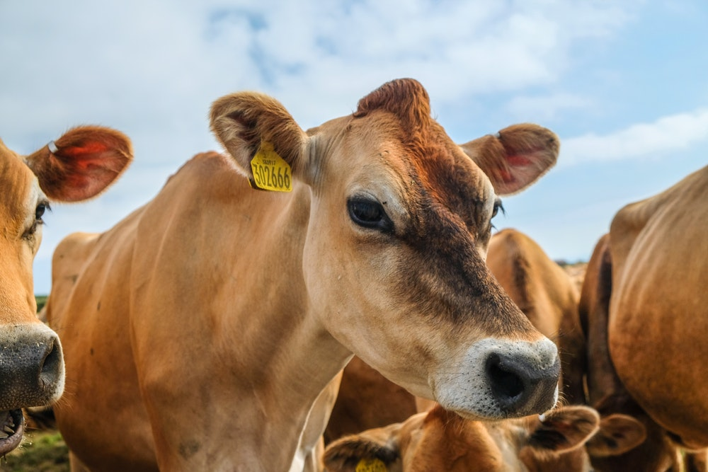

CattleGo Data
The CattleGo data is from the United States Department of Agriculture (USDA) and National Oceanic and Atmospheric Administration (NOAA). Relevant features include yearly cattle production, the major feed for cattle, and weather data in each state.
CattleGo Comparision
The features of CattleGo data can be compared with multiple states in history.
CattleGo Model
The pre-trained predictive model on cattle production is provided. It is a light-weighted model which requires a decent size of data to make meaningful predictions. Therefore, the model is suitable for a Web App.